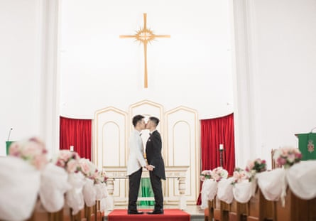

D ino Wong and Geoffrey Yu count themselves among the lucky ones. The Hong Kong couple were married in 2019, in a hastily arranged trip to the US Pacific territory of Guam. The couple, who had been together for about five years and wanted to marry, were spurred to take advantage of amended tax-exemption laws that finally recognised same-sex couples.
“I was a student and he was a doctor, so it helped a lot,” laughs Wong, now a clinical psychologist.
The couple flew to the tropical island for the formalities, and then returned home for a giant banquet with family and friends.
Same-sex marriage is not legal in Hong Kong . But a series of court cases have slowly established some piecemeal rights for LGBTQ+ couples in the city, including those related to public housing, inheritance law and spousal visas . The small wins have made life a little bit easier for couples like Wong and Yu, even if they have sometimes had to fly to Guam to access them.
But most of these gains have been hard fought through the legal system, with activists and others bringing the government to court. While polls show public support for LGBTQ+ rights and relationships is growing in Hong Kong, the political system has gone the other way, and progressive wins are getting harder in a legislature now more dominated by conservative voices.
One of the most significant wins was a September 2023 ruling by the court of final appeal, which affirmed that the city’s laws defined marriage as between a man and a woman, but also said the government was obliged to create an “alternative framework” which recognised the “core rights” of same-sex couples.
The ruling, in a case brought by the activist Jimmy Sham , gave a deadline of two years. Last week, with just months to go, the government released its proposal for the framework, but it was quickly accused of barely reaching the minimum of what was ordered.
The proposal suggests a new “registration mechanism” for same-sex couples, which would then grant them some healthcare-related rights including those relating to hospital visits, medical decisions and information access, organ donation approvals, and after-death arrangements.
It did not address other “core rights” that were expected to be included, such as housing, and it said the registry would only be available to a limited subset of same-sex couples: those where at least one partner was a Hong Kong resident, and the marriage or partnership was registered overseas.
Advocates say it is a pained attempt to offer as little as possible while still complying with the order, and would create a two-tier system that only benefited couples with the financial means to go overseas or draw up legal documents to protect the rights offered by the registry.
Dino Wong and Geoffrey Yu flew to Guam for the formalities, so will be able to register their marriage in Hong Kong.Photograph: Patrick Li/Supplied: Dino Wong, Geoffrey Yu
“The government is creating inequality, making it polarised,” says Wong.
The advocacy group Hong Kong Marriage Equality said the proposal did little to close the gap on the more than 100 instances of differential treatment based on relationship status across 21 areas of law, as identified by the equal opportunities commission.
“Any protection is better than none. But the proposal, as it stands, falls well short of providing the full and equal recognition that all couples and families deserve,” it said, and raised specific concern over the “unfair” requirement that eligible couples must be registered in another country.
“We’d be in this peculiar situation where in order to enjoy a right we’d need to go through this extra step of having a relationship recognised overseas first, which is contingent on the sovereignty of another nation,” the group’s co-founder Jerome Yau told the Guardian.
Wong and Yu’s Guam marriage means they will be able to register. “I will still do it because I want to take advantage of this system to tell the others that, oh, the government finally recognised gay couples’ existence,” says Wong.
That limited recognition, however, has displeased conservative legislators, who have objected to the current proposal.
The document had noted “different views” on same-sex marriage and said it sought to strike a balance “to avoid causing social divisions and affecting social harmony”. It also emphasised that the registered relationships were “not equivalent to marriage”.
Nevertheless the legislator Holden Chow told a committee discussion on Thursday that while his pro-Beijing DAB party opposed discrimination, they felt the proposed system threatened Hong Kong’s traditional family values, RTHK reported .
“Textbooks would then need to teach the next generation that Hong Kong allows the registration of same-sex marriages,” Chow said.
The pro-Beijing legislator Priscilla Leung called it a “dark day” for traditional values, and warned against Hong Kong following “the so-called LGBTQ trend” of other countries, calling on the government to ask to courts for a deadline extension.
After Thursday’s discussion, the secretary for constitutional and mainland affairs, Erick Tsang, reportedly said more improvements would be made to gain legislators’ support.
Even if implemented, neither Wong or Yu feel under any illusion that this is a big leap forward for marriage equality.
“A lot of our friends would never imagine that they can even have a marriage or a stable family, a stable relationship. What the government is doing now is just reinforcing that,” says Yu. “It’s telling you that this is really not for you, that it’s really more for the more privileged or the foreigners or something.”
Wong adds: “That it’s not really a Hong Kong thing.”